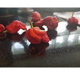

Herbs and Spices
On this page you will find the different Herbs and Spices used inside of our famous BBQ sauce. We can show you some things as to why our sauce taste better than your grandmas!

Now we won't tell you everything we use in our delicious sauce because then it wouldn't be ours. We use natural ingredients from the earth and from our various farms across the nation.
We use various peppers dried and ground up into dust to be used easier in the sauces, we use all natural ingredients with no added preservatives.
Our herbs and spices are only grown in a secret location that our grandfather started to keep it private from the world. Just think, if anyone else got this recipe, our secret sauce would be public and used by all the major companies and they would steal our credit. As stated before, we only use all natural ingredients so they are healthy and safe for the users to consume without getting sick.